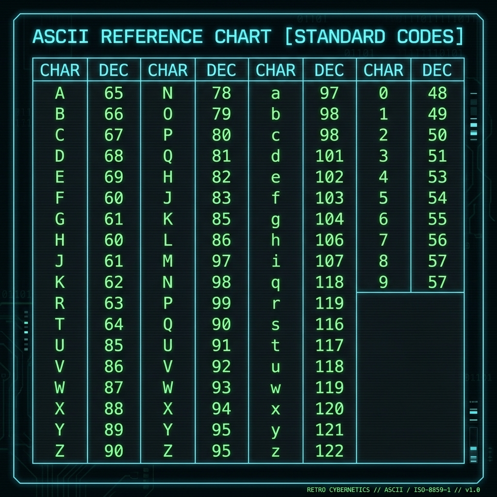

📡 DETECTED LOG FILE & SUSPECT SHIELD
STAGE 05 : Zalgo Text (글자 깨짐)
정전의 여파로 서버 콘솔 메모리 버퍼 영역 전체가 완전히 깨진 특수문자 노이즈로 덮여 복구가 난해해진 상황입니다.
이재헌 과장
서버 담당 (식은땀 흘리는 실무자)
정전 영향으로 콘솔 버퍼가 심각하게 훼손되어 원천 데이터 파악이 어렵습니다.
하지만 보안 커널은 복구 세션 수립을 위해 '현재 시스템의 작동 불량 상태'를 지칭하는 영문 대문자 3글자 상태 플래그 입력을 요구하고 있습니다.
시스템이 다운되어 작동이 '나쁜(불량)' 상태에 직면했음을 뜻하는 대표적인 영어 대문자 3글자 단어(B _ _)를 도출한 뒤, 아스키 코드 레퍼런스 표에서 10진수 값을 찾아 순서대로 나열하십시오.
⚠️ CORRUPTED STRING BUFFER
#$@%&* #$@%&* SYSTEM_LOCKED *&%@$# *&%@$#
📖 ASCII REFERENCE CHART

힌트: 시스템의 오작동 및 불량 상태를 의미하는 영문 대문자 3글자 단어(B _ _)의 아스키 10진수 코드값을 표에서 순서대로 찾아 입력하십시오.